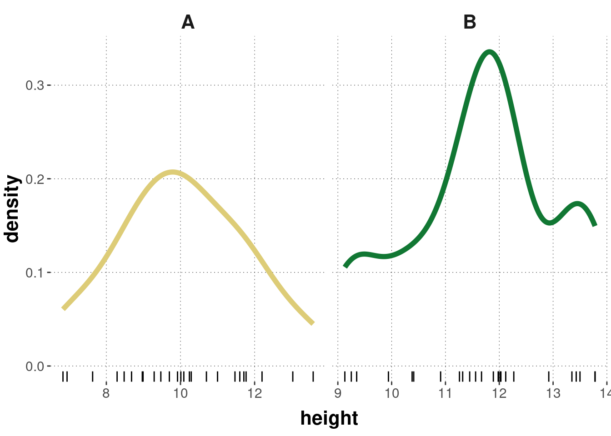
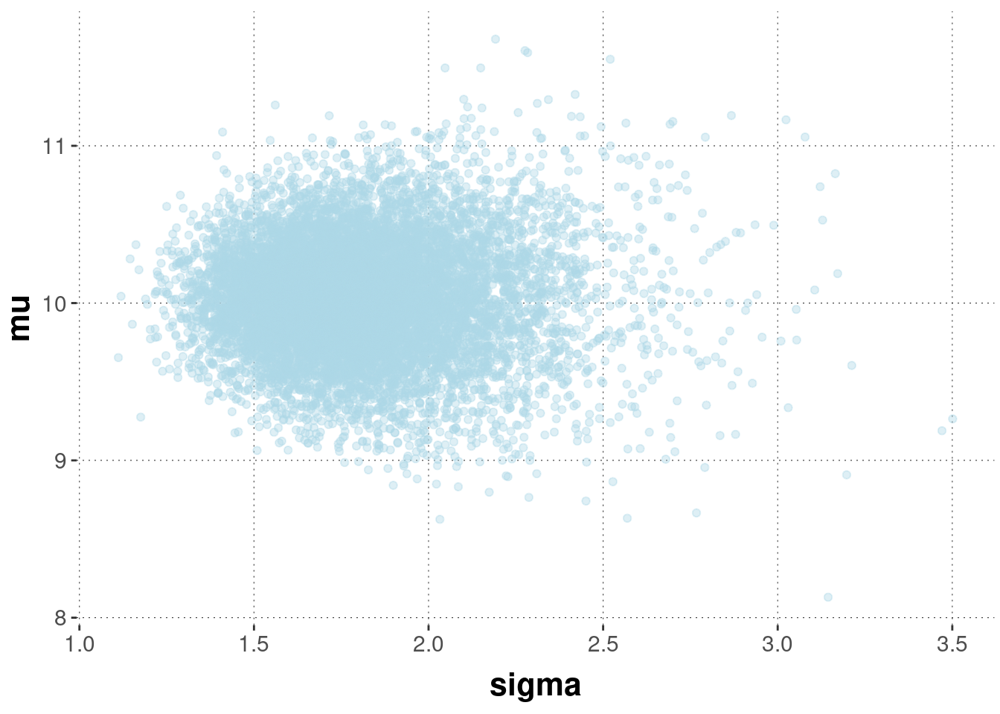
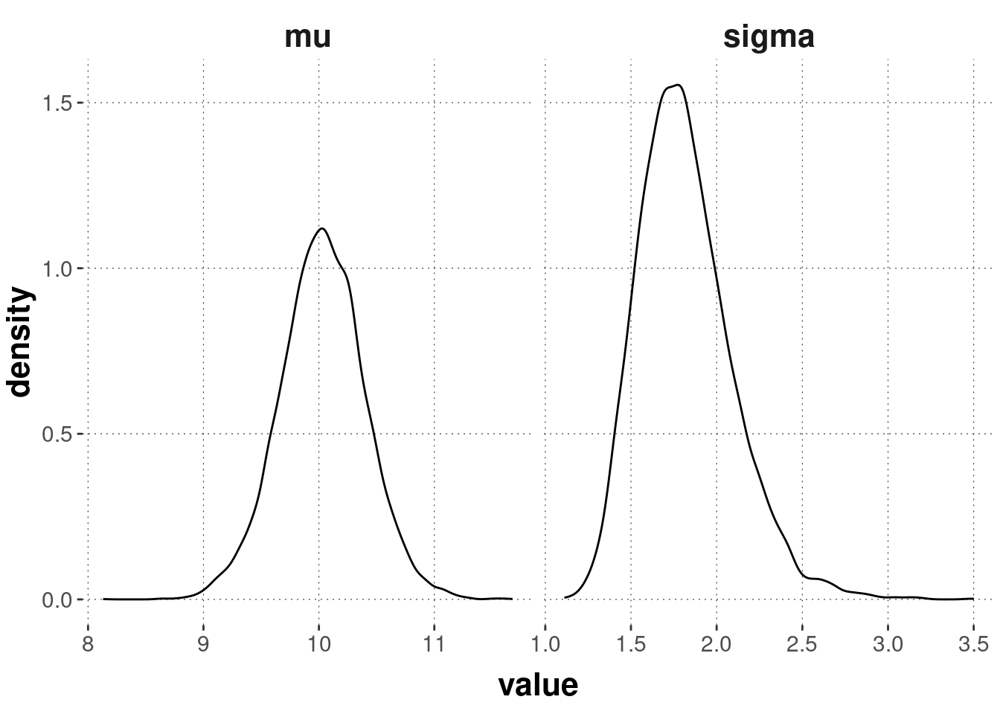
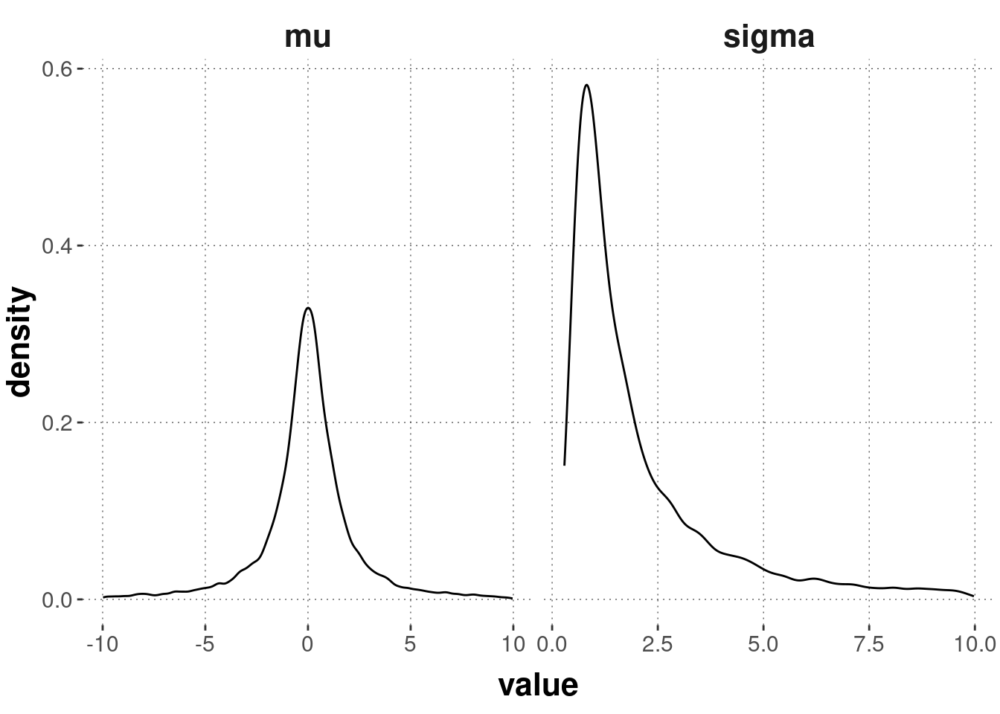

# samples from the prior
samples_prior_2 <- aida::sample_Norm_inv_chisq(
nu = 1,
var = 1, # a priori "variance of the variance"
mu = 20,
kappa = 1
)
samples_prior_2 %>%
pivot_longer(cols = everything(), names_to = "parameter", values_to = "value") %>%
filter(!(parameter == "mu" & (value >= 40 | value <= 0))) %>%
filter(!(parameter == "sigma" & value >= 10)) %>%
ggplot(aes(x = value)) +
geom_density() +
facet_grid(~parameter, scales = "free")9.4 Estimating the parameters of a Normal distribution
To keep matters simple and the sample size low (so as to better see effects of different priors; more on this below), we look at a (boring) fictitious data set, which we imagine being measurements of height of two species of flowers, unflowerly named species ‘A’ and ‘B’.
# fictitious data from height measurements (25 flowers of two species each in cm)
heights_A <- c(6.94, 11.77, 8.97, 12.2, 8.48,
9.29, 13.03, 13.58, 7.63, 11.47,
10.24, 8.99, 8.29, 10.01, 9.47,
9.92, 6.83, 11.6, 10.29, 10.7,
11, 8.68, 11.71, 10.09, 9.7)
heights_B <- c(11.45, 11.89, 13.35, 11.56, 13.78,
12.12, 10.41, 11.99, 12.27, 13.43,
10.91, 9.13, 9.25, 9.94, 13.5,
11.26, 10.38, 13.78, 9.35, 11.67,
11.32, 11.98, 12.92, 12.03, 12.02)On the assumption that the metric measurements for flower ‘A’ come from a normal distribution, the goal is to estimate credible values for that normal distribution’s parameters \(\mu_{A}\) and \(\sigma_{A}\); and similarly for flower ‘B’. The “research question” of interest is whether it is credible that the mean of heights for flower ‘A’ is smaller than that of ‘B’ - or, in other words, whether the difference in means \(\delta = \mu_{B} - \mu_{A}\) is credibly positive.
Here are relevant summary statistics for this case, and a plot, both of which seem to support the conjecture that flower ‘A’ is smaller, on average, than flower ‘B’.
# bring data into a more practical format
ffm_data <- tibble(
A = heights_A,
B = heights_B
) %>%
pivot_longer(
cols = everything(),
names_to = 'species',
values_to = 'height'
)
# some summary statistics
ffm_data %>%
group_by(species) %>%
summarise(
mean = mean(height),
std_dev = sd(height)
)## # A tibble: 2 × 3
## species mean std_dev
## <chr> <dbl> <dbl>
## 1 A 10.0 1.76
## 2 B 11.7 1.38ffm_data %>%
ggplot(aes(x = height)) +
geom_density(aes(color = species), size = 2) +
geom_rug() +
facet_grid(~species, scales = "free") +
theme(legend.position = 'none')
The remainder of this chapter will introduce two models for inferring the parameters of a (single) normal distribution, both of which are set-up in such a way that it is possible to compute a closed-form solution for the posterior distributions over \(\mu\) and \(\sigma\): (i) a model with uninformative priors, and (ii) a model with conjugate priors. These two models are also explained in the video below.
9.4.1 Uninformative priors
The model with uninformative priors is shown in Figure 9.10.

Figure 9.10: A model to infer the parameter of a normal distribution with non-informative priors.
The posterior for variance \(\sigma^{2}\) and mean \(\mu\) for this model with uninformative priors is as follows:
\[ \begin{align*} P(\mu, \sigma^2 \mid \mathbf{y}) & = {\color{7F2615}{P(\sigma^2 | \mathbf{y})}} \ \ \ {\color{353585}{P(\mu \mid \sigma^2, \mathbf{y})}} & \text{with:} \\ \sigma^2 \mid \mathbf{y} & \sim \mathrm{Inv}\text{-}\chi^2 \left(n-1,\ s^2 \right) \\ \mu \mid \sigma^2, \mathbf{y} & \sim \mathrm{Normal} \left (\bar{y} \mid \frac{\sigma}{\sqrt{n}} \right) \end{align*} \]
The aida package provides the convenience function aida::get_samples_single_noninformative, which we use below but also show explicitly first. It takes a vector data_vector (like height_A) of metric observations as input and returns n_samples samples from the posterior.
get_samples_single_noninformative <- function(data_vector, n_samples = 1000) {
# determine sample variance
s_squared <- var(data_vector)
# posterior samples of the variance
var_samples <- extraDistr::rinvchisq(
n = n_samples,
nu = length(data_vector) - 1,
tau = s_squared
)
# posterior samples of the mean given the sampled variance
mu_samples <- map_dbl(
var_samples,
function(var) rnorm(
n = 1,
mean = mean(data_vector),
sd = sqrt(var / length(data_vector))
)
)
# return pairs of values
tibble(
mu = mu_samples,
sigma = sqrt(var_samples)
)
}If we apply this function for the data of flower ‘A’, we get samples of likely pairs consisting of means and standard deviations (each row is one pair of associated samples):
aida::get_samples_single_noninformative(heights_A, n_samples = 5)## # A tibble: 5 × 2
## mu sigma
## <dbl> <dbl>
## 1 9.28 1.93
## 2 10.4 1.37
## 3 9.62 1.73
## 4 10.4 1.77
## 5 9.96 2.06By taking more samples from this 2-dimensional (joint) posterior distribution a scatter point reveals its approximate shape.
# take 10,000 samples from the posterior
post_samples_A_noninfo <- aida::get_samples_single_noninformative(data_vector = heights_A, n_samples = 10000)
# look at a scatter plot
post_samples_A_noninfo %>%
ggplot(aes(x = sigma, y = mu)) +
geom_point(alpha = 0.4, color = "lightblue")
The plot below shows the marginal distributions of each variable, \(\mu\) and \(\sigma\), separately:
post_samples_A_noninfo %>%
pivot_longer(cols = everything(), names_to = "parameter", values_to = "value") %>%
ggplot(aes(x = value)) +
geom_density() +
facet_grid(~ parameter, scales = "free")
As usual, we can also produce the relevant Bayesian summary statistics for our samples, like so:
rbind(
aida::summarize_sample_vector(post_samples_A_noninfo$mu, "mu"),
aida::summarize_sample_vector(post_samples_A_noninfo$sigma, "sigma")
)## # A tibble: 2 × 4
## Parameter `|95%` mean `95%|`
## <chr> <dbl> <dbl> <dbl>
## 1 mu 9.30 10.0 10.7
## 2 sigma 1.33 1.82 2.389.4.2 Conjugate priors
The model with uninformative priors is useful when modelers have no or wish to not include any a priori assumptions about \(\mu\) and \(\sigma\). When prior assumptions are relevant, we can use a slightly more complex model with conjugate priors. The model is shown in Figure 9.11.

Figure 9.11: Model with conjugate priors.
With this prior structure, the posterior is of the form:
\[ \begin{align*} P(\mu, \sigma^2 \mid \mathbf{y}) & = {\color{7F2615}{P(\sigma^2 | \mathbf{y})}} \ \ \ {\color{353585}{P(\mu \mid \sigma^2, \mathbf{y})}} & \text{with:} \\ \sigma^2 \mid \mathbf{y} & \sim {\color{7F2615}{\mathrm{Inv}\text{-}\chi^2 \left({\color{3F9786}{\nu_1}},\ {\color{3F9786}{\sigma^2_1}} \right)}} \\ \mu \mid \sigma^2, \mathbf{y} & \sim {\color{353585}{\mathrm{Normal} \left ({\color{3F9786}{\mu_1}}, \frac{\sigma}{\sqrt{{\color{3F9786}{\kappa_1}}}} \right)}} & \text{where:} \\ {\color{3F9786}{\nu_1}} & = \nu_0 + n \\ \nu_n{\color{3F9786}{\sigma_1^2}} & = \nu_0 \sigma_0^2 + (n-1) s^2 + \frac{\kappa_0 \ n}{\kappa_0 + n} (\bar{y} - \mu_0)^2 \\ {\color{3F9786}{\mu_1}} & = \frac{\kappa_0}{\kappa_0 + n} \mu_0 + \frac{n}{\kappa_0 + n} \bar{y} \\ {\color{3F9786}{\kappa_1}} & = \kappa_0 + n \end{align*} \]
Exercise 9.7
The aida package provides the convenience function aida::sample_Norm_inv_chisq for sampling from the ‘normal inverse-\(\chi^2\)’ prior. Here is the source code of this function:
sample_Norm_inv_chisq <- function(
n_samples = 10000,
nu = 1,
var = 1,
mu = 0,
kappa = 1
)
{
var_samples <- extraDistr::rinvchisq(
n = n_samples,
nu = nu,
tau = var
)
mu_samples <- map_dbl(
var_samples,
function(s) rnorm(
n = 1,
mean = mu,
sd = sqrt(s / kappa)
)
)
tibble(
sigma = sqrt(var_samples),
mu = mu_samples
)
}In the code below, we use this function to plot 10,000 samples from the prior with a particular set of parameter values. Notice the line filter(abs(value) <= 10) which is useful for an informative plot (try commenting it out: what does that tell you about the range of values reasonably likely to get sampled?).
# samples from the prior
samples_prior_1 <- aida::sample_Norm_inv_chisq(
nu = 1,
var = 1, # a priori "variance of the variance"
mu = 0,
kappa = 1
)
samples_prior_1 %>%
pivot_longer(cols = everything(), names_to = "parameter", values_to = "value") %>%
filter(abs(value) <= 10) %>%
ggplot(aes(x = value)) +
geom_density() +
facet_grid(~parameter, scales = "free")
To get comfortable with this ‘normal inverse-\(\chi^2\)’ distribution, fill in the XXX in the following code box (possibly removing or altering parts of the plotting code if you need to) to find parameter values that encode a prior belief according to which credible values of \(\sigma\) are not much bigger than (very roughly) 7.5, and credible values of \(\mu\) lie (very roughly) in the range of 15 to 25. (Hint: intuit what the meaning of each parameter value is by a trial-error-think method.) The plot you generate could look roughly like the one below.
(Motivation for the exercise: you should get familiar with this distribution, and also realize that it is clunky and that you might want to use a different prior structure in order to encode specific beliefs … which is exactly why we might want to be more flexible and go beyond conjugate priors in some cases.)
# samples from the prior
samples_prior_2 <- aida::sample_Norm_inv_chisq(
nu = XXX,
var = XXX,
mu = XXX,
kappa = XXX
)
samples_prior_2 %>%
pivot_longer(cols = everything(), names_to = "parameter", values_to = "value") %>%
filter(!(parameter == "mu" & (value >= 40 | value <= 0))) %>%
filter(!(parameter == "sigma" & value >= 10)) %>%
ggplot(aes(x = value)) +
geom_density() +
facet_grid(~parameter, scales = "free")Here is another convenience function from the aida package for obtaining posterior samples for the conjugate prior model, taking as input a specification of the prior beliefs. Again, we first show the function explicitly before applying it to the flower data set.
get_samples_single_normal_conjugate <- function(
data_vector,
nu = 1,
var = 1,
mu = 0,
kappa = 1,
n_samples = 1000
)
{
n <- length(data_vector)
aida::sample_Norm_inv_chisq(
n_samples = n_samples,
nu = nu + n,
var = (nu * var + (n - 1) * var(data_vector) + (kappa * n) / (kappa + n)) / (nu + n),
mu = kappa / (kappa + n) * mu + n / (kappa + n) * mean(data_vector),
kappa = kappa + n
)
}The code below calls this function to obtain samples from the posterior for two different models. This will help illustrate the effect of priors on the posterior once more, especially for a case like the one at hand where we have only rather few data observations.
# posterior samples for prior 1
post_samples_A_conjugate_1 <- aida::get_samples_single_normal_conjugate(
heights_A,
nu = 1,
var = 1,
mu = 0,
kappa = 1,
n_samples = 10000
)
# posterior samples for prior 2
post_samples_A_conjugate_2 <- aida::get_samples_single_normal_conjugate(
heights_A,
nu = 1,
var = 1/1000,
mu = 40,
kappa = 10,
n_samples = 10000
)
rbind(
aida::summarize_sample_vector(post_samples_A_conjugate_1$mu, "mu") %>% mutate(model = 1),
aida::summarize_sample_vector(post_samples_A_conjugate_1$sigma, "sigma") %>% mutate(model = 1),
aida::summarize_sample_vector(post_samples_A_conjugate_2$mu, "mu") %>% mutate(model = 2),
aida::summarize_sample_vector(post_samples_A_conjugate_2$sigma, "sigma") %>% mutate(model = 2)
)## # A tibble: 4 × 5
## Parameter `|95%` mean `95%|` model
## <chr> <dbl> <dbl> <dbl> <dbl>
## 1 mu 8.93 9.65 10.3 1
## 2 sigma 1.30 1.76 2.25 1
## 3 mu 18.0 18.6 19.2 2
## 4 sigma 1.32 1.82 2.33 2The posterior is a mixture of prior and likelihood. The prior for model 1 is rather weak (high variance, low \(\kappa\) leading to a large range of plausible values for \(\mu\)). The prior for model 2 is rather biased. The credible values of \(\mu\) are rather high.
9.4.3 Estimating the difference between group means
The ulterior “research question” to address is: should we believe that flowers of type B are higher, on average, than flowers of type A? To address this question, it suffices to take samples for \(\mu_{A}\) and \(\mu_{B}\), obtained by one of the methods introduced in the previous sections (using the same model for both flower types, unless we have a good reason not to), and then to inspect the vector of differences between samples \(\delta = \mu_{B} - \mu_{A}\). If the derived samples of \(\delta\) are credibly bigger than zero, there is reason to believe that there is a difference between flower types such that ‘B’ is bigger than ‘A’.
So, let’s use the (conjugate) prior of model 1 from above to also take 10,000 samples from the posterior when conditioning with the data in heights_B. Store the results in a vector called post_samples_B_conjugate_1.
post_samples_B_conjugate_1 <- aida::get_samples_single_normal_conjugate(
heights_B,
nu = 1,
var = 1,
mu = 0,
kappa = 1,
n_samples = 10000
)The summary of the difference vector gives us information about credible values of \(\delta = \mu_{B} - \mu_{A}\).
delta_flower_heights <- post_samples_B_conjugate_1$mu - post_samples_A_conjugate_1$mu
aida::summarize_sample_vector(delta_flower_heights, name = 'delta')## # A tibble: 1 × 4
## Parameter `|95%` mean `95%|`
## <chr> <dbl> <dbl> <dbl>
## 1 delta 0.712 1.58 2.47We might conclude from this that a positive difference in height is credible. More on Bayesian testing of such hypotheses about parameter values in Chapter 11.